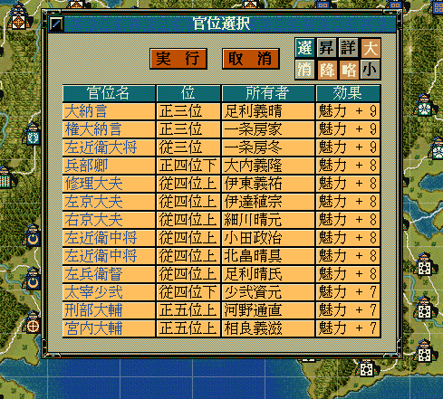
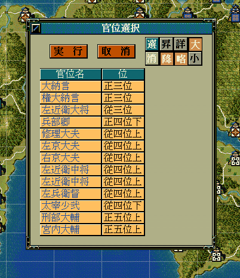
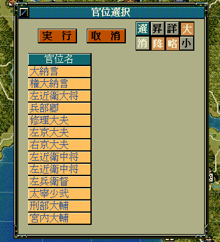

官位のリストを表示して、そこから選択してもらうためのダイアログを表示するAPIです。
大小関わらず、自作の独自イベントなどで利用することになるでしょう。
void カスタム::On_プレイヤ担当ターン《メイン画面》() {
番号リスト型 ShowKanniList;
for (int iKanniID = 0; iKanniID < 最大数::官位情報::配列数; iKanniID++) {
// 位階::正五位上 以上の官位
if (p官位情報[iKanniID].位階 <= 位階::正五位上) {
// 所有者が居る
if (p官位情報[iKanniID].所有武将【武将番号】 != 0xFFFF) {
ShowKanniList.push_back(iKanniID);
}
}
}
int iSelectedKanniID = 選択官位ダイアログ表示(ShowKanniList, カラム::官位::デフォルト);
if (0 <= iSelectedKanniID && iSelectedKanniID < 最大数::官位情報::配列数) {
デバッグ出力 << Get_官位名(iSelectedKanniID) << "が選択されました" << endl;
}
else {
デバッグ出力 << "官位は選択されませんでした" << endl;
}
}

int iSelectedKanniID = 選択官位ダイアログ表示(ShowKanniList, カラム::官位::官位名|カラム::官位::位);

int iSelectedKanniID = 選択官位ダイアログ表示(ShowKanniList, カラム::官位::官位名);

「官位ダイアログ」に関する主な所は以上となります。 詳しくは「ダイアログ情報型.h」を参照してください。